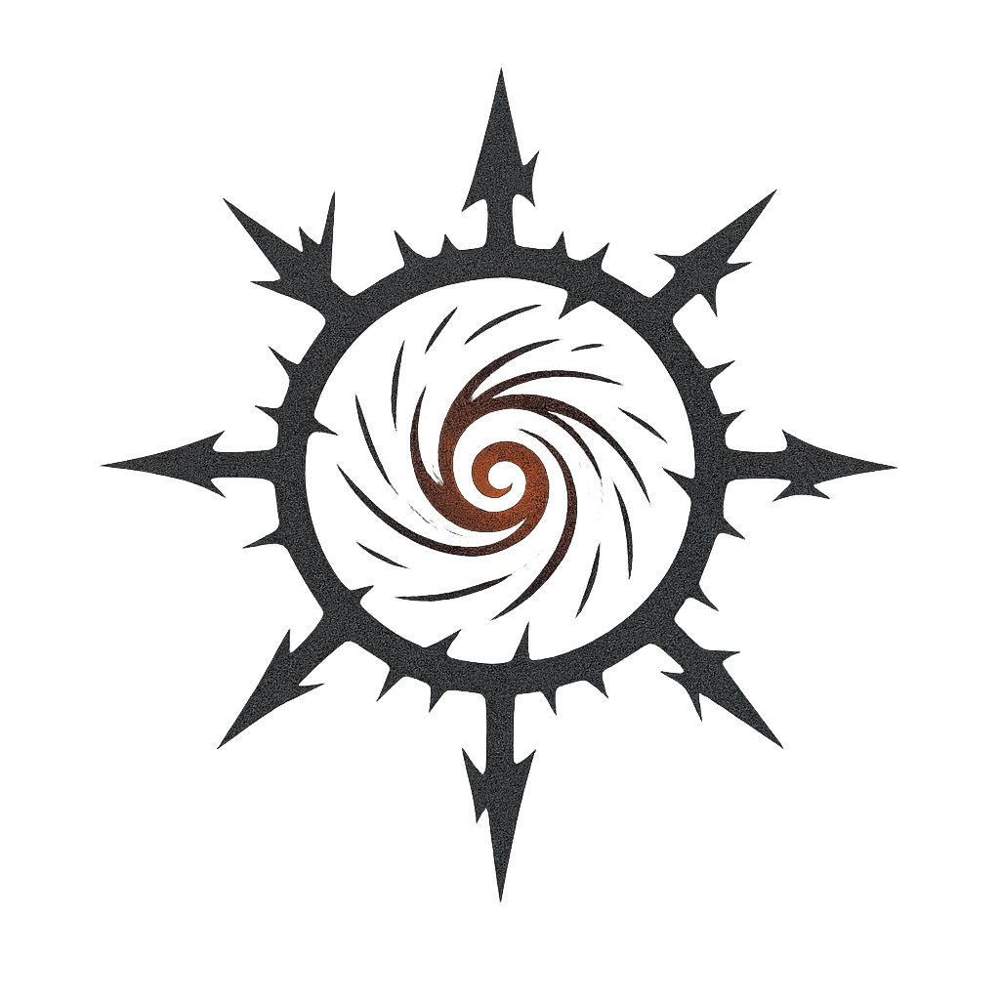
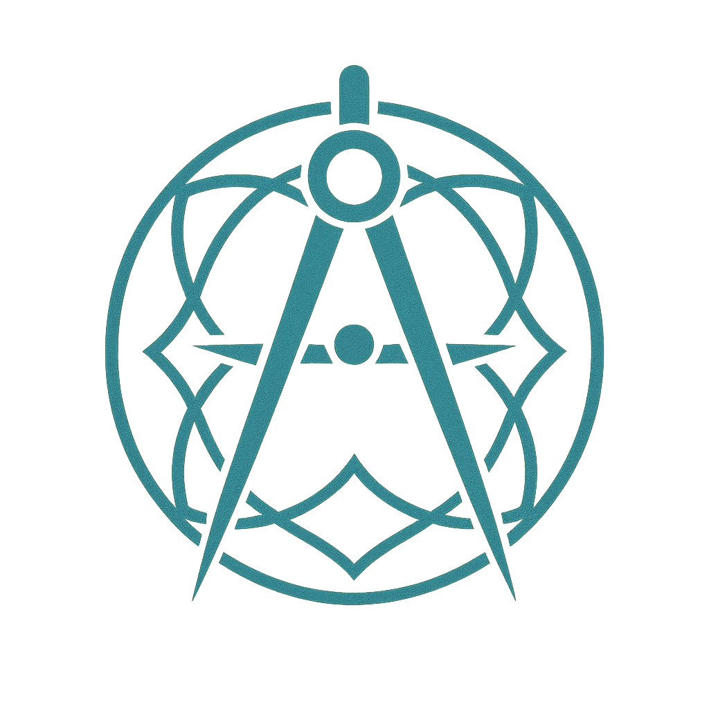
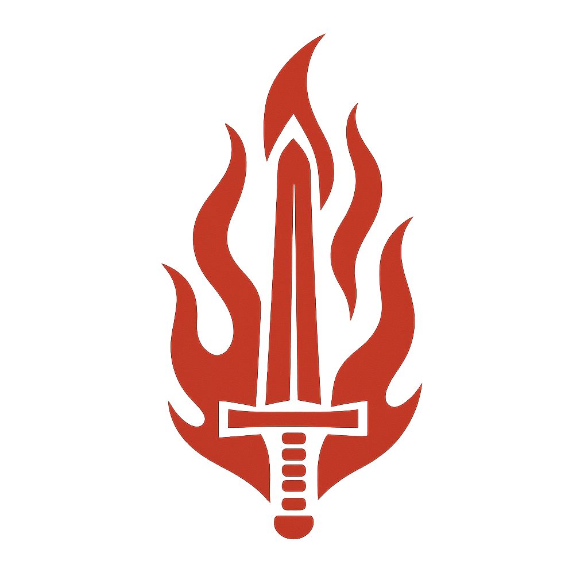
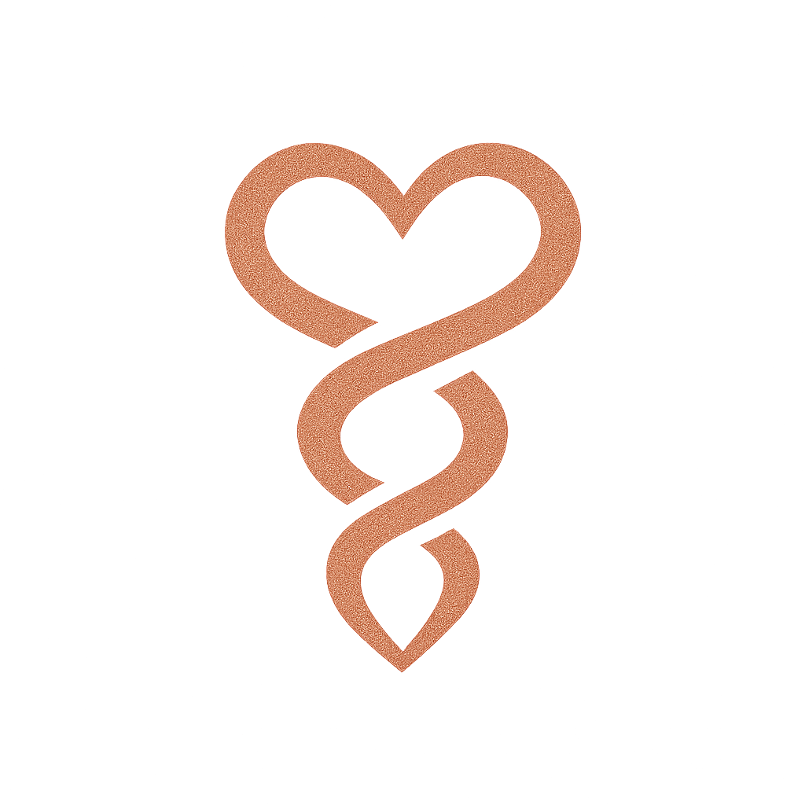
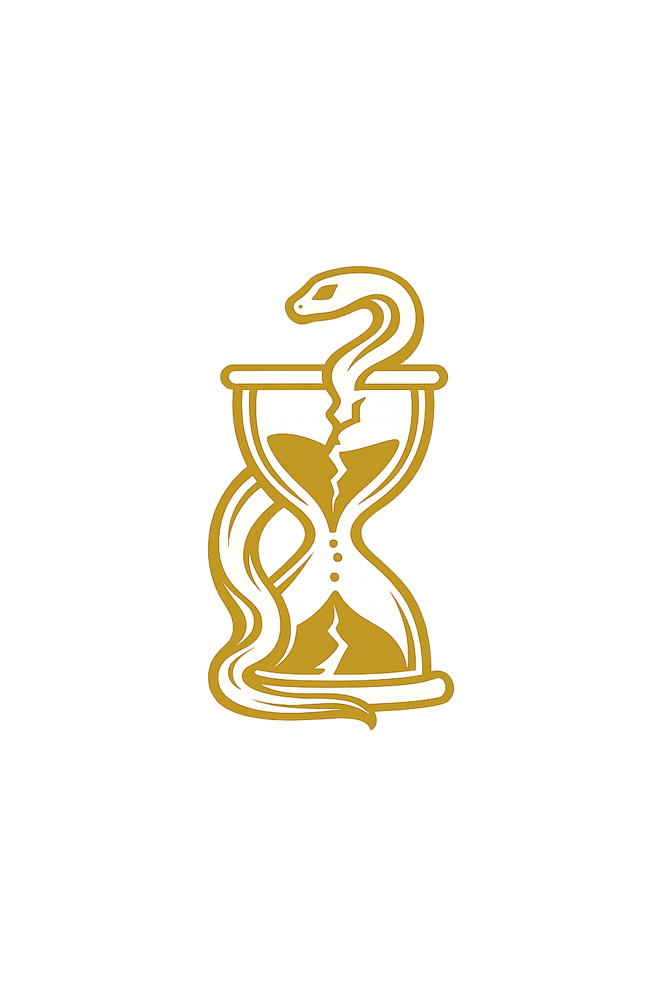
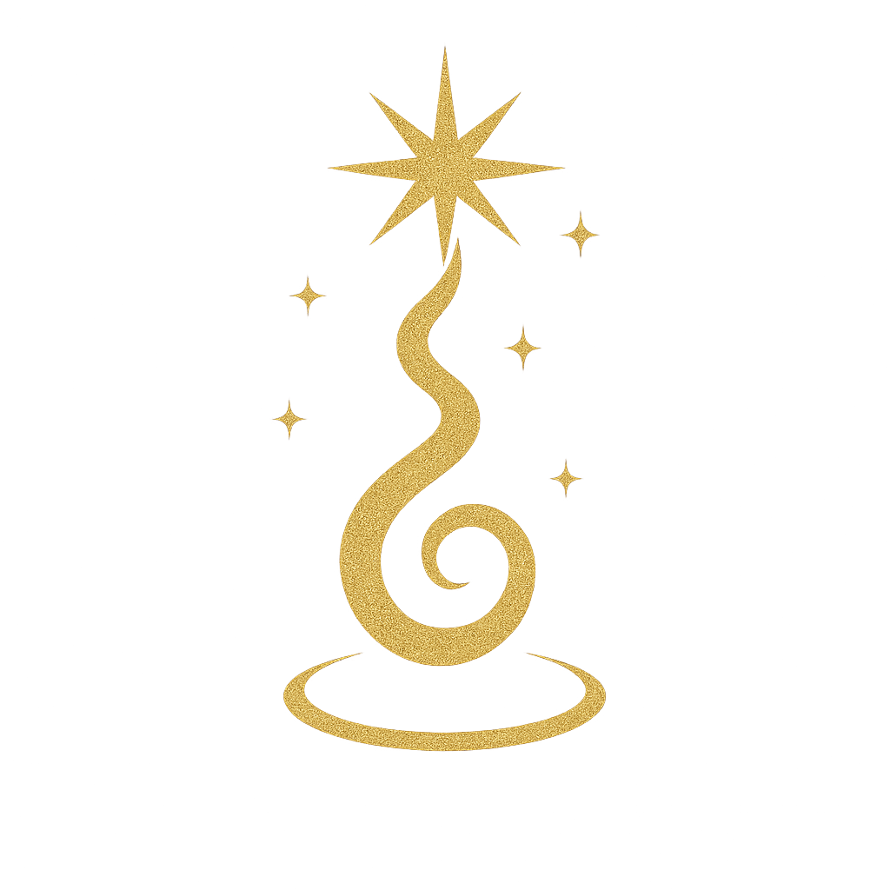

Architecture du modèle
Sept dynamiques fondamentales qui traversent toute réalité humaine.
Ni bonnes ni mauvaises — elles agissent, entrent en tension, s'équilibrent, se déforment.

Ce qui ouvre, fissure les cadres établis et rend l'émergence possible.
Le Chaos n'est pas le désordre au sens négatif du terme. Il est la condition première de toute émergence — ce qui précède la forme, ce qui contient toutes les formes possibles.
Là où Chaos domine, les structures se fissurent, les certitudes vacillent, mais l'espace du possible s'agrandit. Sans Chaos, aucune transformation n'est possible. Sans Ordre pour le contenir, il dissout ce qui tient.
Ce qui structure, organise et stabilise dans la durée.
L'Ordre est la force qui donne forme au possible. Il crée les cadres, les règles, les institutions — tout ce qui permet à une réalité collective de se reproduire dans le temps.
Lorsqu'il est en équilibre, l'Ordre protège et libère. Lorsqu'il devient hégémonique, il étouffe l'émergence, fige ce qui devrait rester vivant, et finit par appeler le Chaos comme réponse.


Ce qui engage, tranche et oriente l'action.
La Volonté est la force de l'engagement. Elle ne décrit pas ce qu'on pense — elle désigne ce qu'on fait, ce vers quoi on se dirige résolument malgré l'incertitude.
Là où la Volonté manque, les projets restent en suspens, les crises s'étirent faute de décision. Là où elle excède, elle peut devenir domination, écrasant ce qui résiste plutôt que de composer avec.
Ce qui relie, attache et permet aux ensembles humains de tenir.
Le Lien est la force de la cohésion — ce qui fait qu'un groupe reste un groupe, qu'une relation dure, qu'un tissu social ne se déchire pas. Il opère dans l'invisible : la confiance, la reconnaissance mutuelle, le sentiment d'appartenir.
Quand le Lien se rompt, les structures peuvent subsister mais elles sonnent creux. Quand il se comprime sous la pression d'autres forces, c'est souvent le premier signe d'une crise profonde.

Ce qui éclaire, distingue et rend le monde intelligible.
Le Savoir est la force qui rend le réel lisible. Il ne se réduit pas à l'accumulation de données — il désigne la capacité à distinguer, à nommer juste, à transmettre ce qui a été compris.
Lorsque le Savoir est en tension avec la Volonté, on agit sans comprendre. Lorsqu'il se sépare du Lien, il peut devenir froid, instrumental, coupé de ce qui fait le sens humain des choses.
Ce qui confronte aux limites et oblige à transformer.
L'Épreuve est la force du seuil — ce moment où une réalité est poussée jusqu'à sa limite et ne peut plus continuer comme avant. Elle ne détruit pas : elle oblige à une transformation que rien d'autre n'aurait pu provoquer.
Les crises, les ruptures, les passages difficiles sont souvent des manifestations de l'Épreuve à l'œuvre. Ce qui en sort transformé ne revient pas à l'état antérieur — il en émerge différent, ou s'effondre.


Ce qui appelle un dépassement et reconfigure les horizons.
La Transcendance est la seule force hors-axe du modèle. Elle ne s'oppose à aucune autre — elle les dépasse toutes. Elle désigne cette dimension qui tire une réalité vers quelque chose de plus grand qu'elle-même.
Elle peut prendre des formes très diverses : le sacré, l'idéal collectif, le sens donné à une épreuve, la vision qui mobilise au-delà de l'intérêt immédiat. Là où elle est absente, les systèmes humains finissent par tourner à vide.